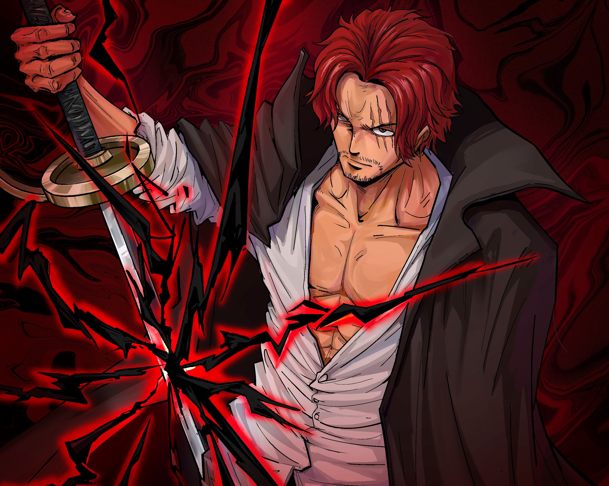

蒙奇·D·路飞
“草帽一伙”的船长，外号“草帽小子”。东海出身，悬赏金30亿贝里。
“草帽一伙”的创立者，是被称作“极恶的世代”中登陆香波地群岛的11位超新星的其中一位。
在“和之国”事件中将原“四皇”之一的“百兽”凯多击溃，顶替其成为新的“四皇”。
是食用了橡胶果实的橡胶人（五老星认为这是人人果实·幻兽种·尼卡形态）。
梦想成为“海贼王”，以此为目标在大海上航行。
东海哥亚王国风车村出身，以成为海贼王，找到传说中的大秘宝（ONE PIECE）为目标而航行。路飞性格积极乐观，爱憎分明，宁死不屈，十分重视伙伴与朋友，对任何冒险相关的事物都超感兴趣。和其他传统的海贼所不同的是，他并不会为了追求财富而杀戮，而是享受着身为海贼的冒险和自由。
路飞（Luffy）这名字源自英语“Luff”，意即“逆风航行”，这是尾田荣一郎想过最适合船长使用的名字。此外，尾田也指出路飞生下来就是运势非凡的人；只有实力和运气兼备的人，才能成就伟大功业 [14]。姓氏蒙奇（Monkey），和英文里的“猴子”相同。而路飞的代表动物也是猴子

罗罗诺亚·索隆
佐罗是草帽海贼团的第1名成员，亦是路飞最初的伙伴。原为狩猎海贼的赏金猎人，加入草帽海贼团，草帽海贼团二把手。特征是一头绿色短发、左臂绑着深绿色头巾（全力战斗时会把它系在头上）、绿色肚兜和左耳的三只水滴状耳环，自第二部开始左眼多了一条伤痕。其流派是自创的“三刀流”，双手持刀之外，口中再咬着一把刀。目前的佩刀为“和道一文字”、“三代鬼彻”和“阎魔”。
他贯彻自己的“武士道”，日复一日坚持严苛的身体训练，从而练就极为强韧的肉体和控制自如的筋力，臂力甚至强劲到能够将斩击“剑波化”，亦可在身上无刀时使用“无刀流”。身为武士，佐罗在战斗当中常身先士卒，受伤的频率也最高，有几次甚至承受足以致人于死的重伤。不过嗜睡的佐罗也认为“不管多重的伤只要睡觉就会好”，常以“锻炼身体时很不方便”为借口，不等伤势好转便径自拆掉绷带。
酒量极好，喜欢喝酒，不过佐罗声称“真正的剑士绝对不能将自己灌醉”。 其最大的缺点是没有方向感，有时就算有他人指路或跟同伴走在一条路上，也会突然跑到其他地方去，此举而被之后同盟的罗耻笑。

香克斯
在神之谷事件后被罗杰收养，后作为见习海贼在罗杰海贼团实习，
在罗杰海贼团解散后，成立了红发海贼团，6年前跻身四皇之一，
悬赏金为40亿4890万贝里。 [3]然而与这威名相反，
世界上再没有比他更加能体现“自由”的海贼了，
如果“海贼王”的定义是“这片海上最自由的人”，那么可以说，
香克斯是与那个宝座最接近的存在了。
香克斯武器是一把名为“格里芬”的西洋剑。武器名字取自于狮鹫。
香克斯性格豪爽，为人随和，喜欢恶作剧（曾对幼年路飞灌酒），凡事都向前看，乐观程度极度严重，即使自己被羞辱也可以一笑而过，但是绝不允许自己的伙伴被任何人伤害。喜欢到处开派对，极爱喝酒，重视程度仅次于伙伴。
官方生命卡上表示他曾经在这片海域留下了无数传说，最终成为能与白胡子平等对抗的存在，在海贼中没有比他更能体现“自由”这一概念的人。如果将海贼王定义为“这片海域最自由的人”的话，那香克斯则是离王座最近的人。
第二部中海军评价他为“成为四皇6年，四个人里最年轻的，深受部下信赖，他手下的干部个个都大名鼎鼎，悬赏金的平均值非常高，最平衡的铁壁海贼团”。